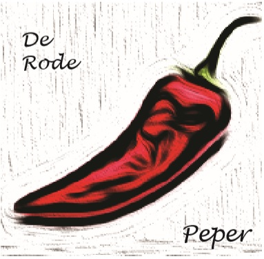
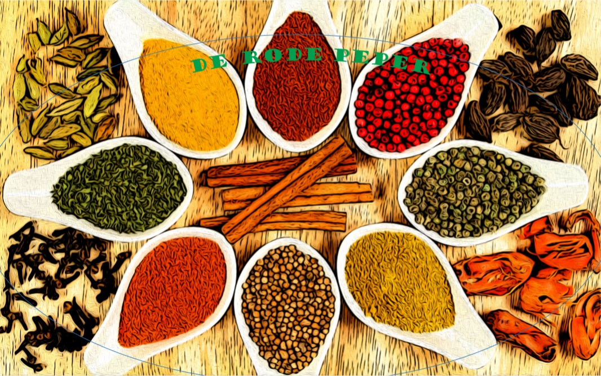
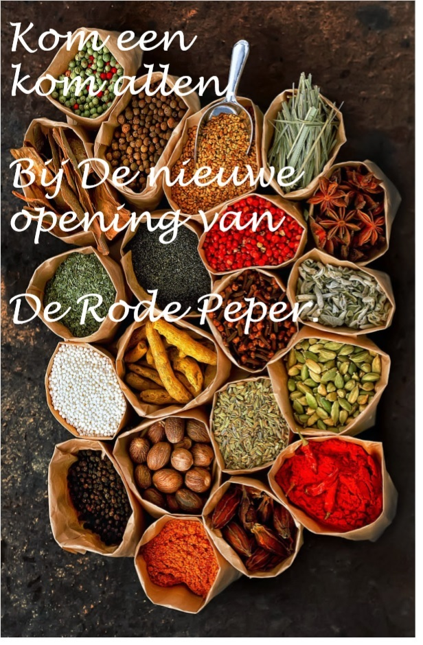
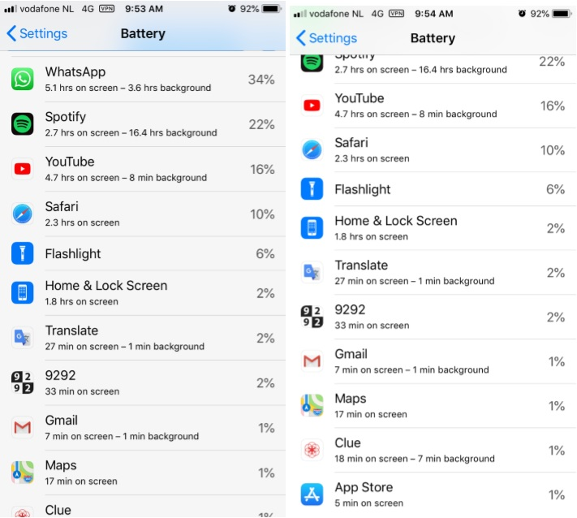
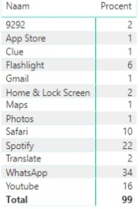
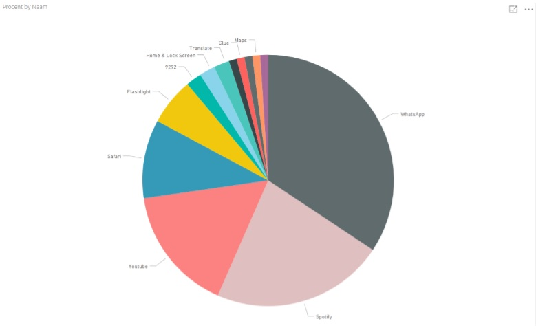
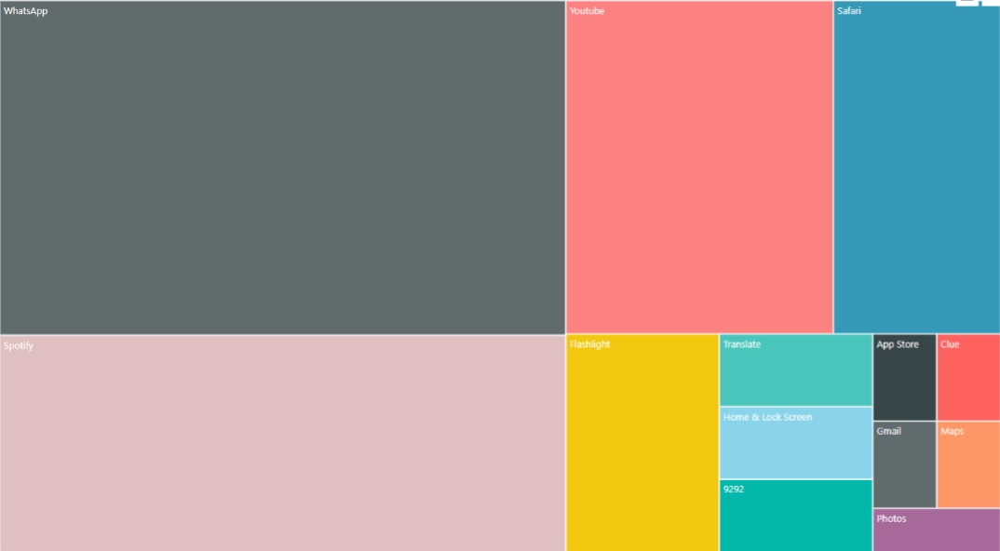
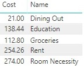
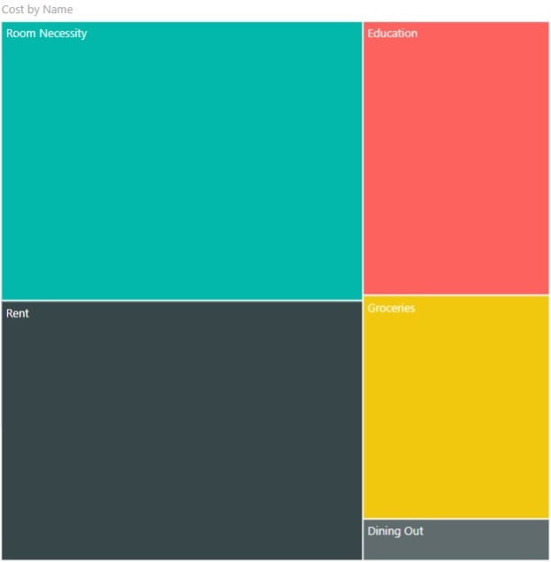

Mijn Portfolio voor OIM11
Week 1
In die week moesten de digital footprint van onze buurman gaan onderzoeknen,
door middel van een brainstorm proberen we antwoord krijgen over verschillende
vragen (over wat is media design, welke techniek er worden gebruikt, welke
producten kun je maken en welke trends zijn er), inspireerende afbeeldingen,
video, websites en deze allemaal binnnen een word document zetten.
doc opdrachten week 1
Week 2
In week 2 moeten we een video maken over wat wij denken een media designer
doet
klik hier om te zien: A day in the life
Week 3
in deze week moeten we met behulp van abobe illustrator, photoshop en InDesign
een logo en een flyer ontwerpen.
Logo eerste concept

Echte Logo

Flyer1

Week 4
In deze week moesten we chart maken over hoeveel wij onze mobiel telefoon gebruikt bij bepaalde apps.
App usage

Hier onder ligt enkele charts van het gebruikte



Iets Extra's gemaakt
About my Daily Expenses



Week 5
In deze week moesten we een chatbot maken. Hiervoor heb ik 2 gemaakt 1 was
van Bob Marley en de andere van Pepe Nacho een echte Mexicaanse Food Truck die op Aruba zit.
PepeNachoBot en
BobMarleyBot.
Week 6
Eigenlijk was ik deze week afwezig.